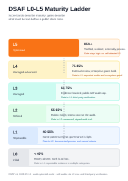
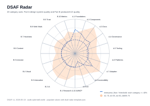

README first-screen promise
Design-system audits without taste arguments
DSAF is an open, criteria-graded way to inspect design-system maturity and the UX it produces.


DSAF is an open, criteria-graded way to inspect design-system maturity and the UX it produces.

